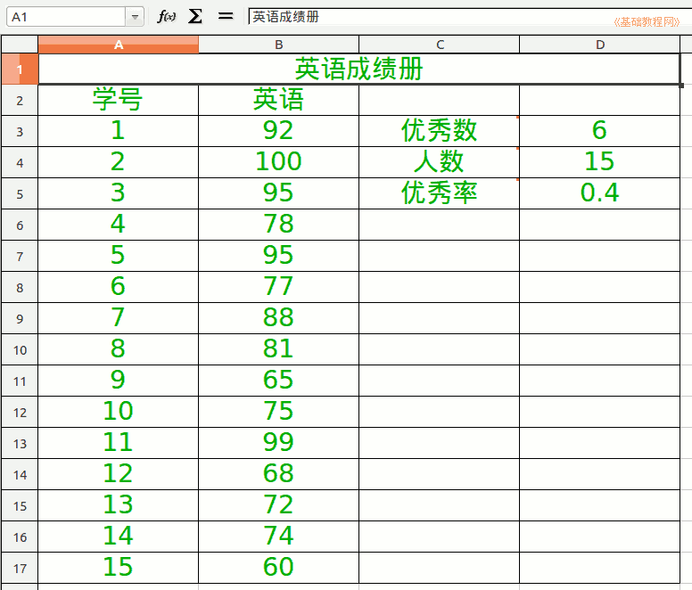

2012-2013 第一学期八年级电子表格教学设计
作者：TeliuTe 来源：基础教程网
十五、学习随机函数、优秀率 返回目录 下一课
（一）教学设计
1、学习目标：学习随机函数、优秀率
2、注意事项：单词多读几遍
3、教学过程：
1）教师准备学案和板书；
2）学生整队进入，开机抄黑板上笔记；
3）教师讲解板书演示操作；
4）学生打指法、日志、完成操作；
5）教师打勾记录学生指法成绩，检查日志和操作；
注：学生抄完笔记就开始打指法、日志，老师讲完后再继续完成；
（二）板书设计(学生笔记)
第15课 学习随机函数、优秀率
1.用Rnd Between生成15人成绩60-100
2.用countif算出优秀人数">=85"
3.用count算出考试人数
4.用除法公式算出优秀率=优秀/总人数
5.随机数是一种概率
操作图示：

（三）课后记
--
把 Rand 写成 Rnd 第一个班竟然没说出来
估计是老吵被训的，不敢发表意见
--
讲方法分成三块，日志一块、讲解一块、操作一块
练上三遍应该就会了，把难的分解开，学不会就检查是哪一步出问题
--
总体来看不难，讲完一会就做完
容易出问题是优秀数的countif函数
--
对于f(x)的参数还是不太好理解
为什么要框一下范围，到这一步为什么要框
--
每节课有新知识点和复习上一节的
自己在输日志的时候分出来，单词跟着老师读两遍
--
不要求速度，关键是要学会
要求算及格率、优秀率都能算出来
--
读单词学生在下面笑，英文还得学一学
好在不是英语老师，读不好也没关系
--
重点放在知识上，音调这些不好就不好了
不需要为这些花费觉得下不了台什么的
返回目录 下一课
本教程由86团学校TeliuTe制作|著作权所有
基础教程网：http://teliute.org/
美丽的校园……
转载和引用本站内容，请保留版权信息和本站链接。